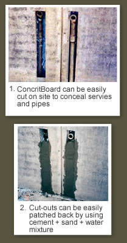
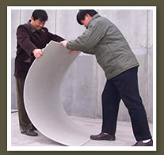

ConcritBoard has the following benefits that cannot be found in a lot of other partition wall boards.
- After contact with water, the ConcritBoard’s expansion in its thickness, length and width is insignificant. This means there will be less cracks occurring at the joints.
- During rainy days, rainwater that seeps into ConcritBoard will evaporate very fast. Hence, this board is suited for external application. There is no worry of fungus growth and product deterioration since there is no long term water or moisture retention in the board.
- For owners that desire very good sound resistant property and thinner walls for its high end project such as 5 star hotel, its high STC acoustic value of 58 and wall thickness of 155mm will be able to satisfy this need.
- A high force is required to pull out the self-tapping screw lodged in ConcritBoard, therefore heavy objects can be hung on the wall.
- Since ConcritBoard is made from cement, ash, sand and aggregates, it becomes a good sub-base for receiving cementitious-based waterproofing, skim coat and tiling adhesive products which are readily and cheaply available.
- If somebody accidentally punched a hole thru ConcritBoard or if you need to cut an opening thru the board to run some services, the hole or opening can be patched up using normal cement sand mix. Therefore, no special repair method and searching for the right patching material is needed. (See Video)
- Cutting ConcritBoard is very easy. (See Video) So, there will be no loss of productivity and danger of fingers getting cut
.
- So far not many boards in the market can be curved without breaking. Therefore, its benefit to designers who likes designing nice-looking circular structures is limited. ConcritBoard can be curved easily without breaking and the bending can done on site.

|